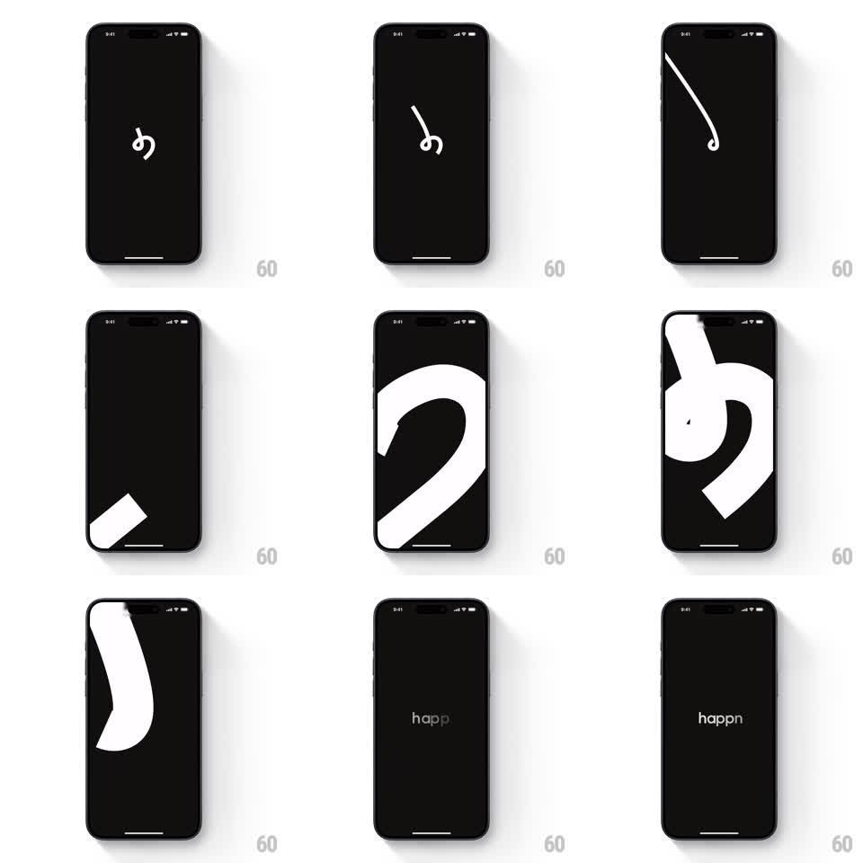

Media
Frame-by-frame

Rebuild this animation 1:1: happn's splash - a small white vector logo mark on black scales up enormously until its strokes flood the screen, then the "happn" wordmark types itself in at the end.

Rebuild this animation 1:1: happn's splash - a small white vector logo mark on black scales up enormously until its strokes flood the screen, then the "happn" wordmark types itself in at the end. ## Integration Integration: stack-agnostic spec - springs given as stiffness/damping, timed motions as duration + curve; map every value to your framework and animation library of choice. ## Scene Solid black screen. Centered white happn logo mark (a rounded, looped "h" glyph, ~40px). Final state: centered lowercase "happn" wordmark in white. ## Motion spec Pattern: logo zoom flood -> wordmark reveal, ~2s. - Hold the small mark centered for 400ms. - The mark scales up 1 -> 30x over 1s, ease-in, so its strokes grow past the screen edges and briefly flood the frame white-on-black at extreme crop. - At peak zoom the screen is near-white; crossfade the whole frame to black (200ms). - The wordmark "happn" appears letter by letter, left to right, 60ms per letter, no cursor. ## Calibration - The zoom accelerates (ease-in, not ease-out) - the flood should feel like falling into the logo. - The white flood never hits 100% coverage; the black background stays visible at the corners until the crossfade. ## Reduced motion Small mark crossfades directly to the full wordmark (300ms); no zoom. ## Don't miss - The mark stays dead-center through the whole zoom - drift reads as a rendering bug. - Wordmark letters pop in with no fade or slide; it's a type-on, not a stagger animation.